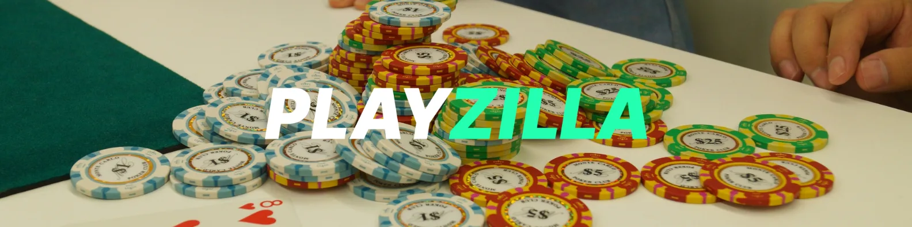

PlayZilla Schweiz – Dein Online Casino mit Bonus & App
PlayZilla hat sich in der Schweiz als eine der innovativsten Plattformen für Online-Casino-Spiele etabliert. Diese moderne Spielplattform kombiniert ein umfassendes Angebot an Slots, Tischspielen und Live-Casino-Erlebnissen in einer intuitiven Benutzeroberfläche, die speziell für den Schweizer Markt optimiert wurde. Mit internationaler Lizenzierung garantiert PlayZilla ein sicheres und transparentes Spielerlebnis für alle Nutzer in der Schweiz. Die Plattform zeichnet sich durch ihr grosszügiges Willkommenspaket, regelmässige Promotionen und eine vollständig optimierte Mobile App aus. Ob Sie klassische Slots, moderne Video-Slots, Tischspiele oder Live-Dealer-Erlebnisse bevorzugen – PlayZilla Schweiz bietet vielfältige Inhalte, die auf die Vorlieben Schweizer Spieler zugeschnitten sind. Die Plattform unterstützt den Schweizer Franken als Hauptwährung und bietet Kundensupport in Deutsch, was PlayZilla zur idealen Wahl für Casino-Enthusiasten in der ganzen Schweiz macht.
Jetzt registrieren & Bonus sichern| Kategorie | Details |
|---|---|
| 🎯 Lizenz | Internationale Glücksspiellizenz |
| 📅 Gegründet | 2019 |
| 💻 Plattform | Website + Mobile App |
| 🎰 Casino Spiele | 2500+ verschiedene Spiele |
| 🕹️ Spielanbieter | NetEnt, Microgaming, Play'n GO, Evolution |
| 💳 Zahlungen | Kreditkarten, TWINT, PostFinance, Skrill, Neteller, Kryptowährungen |
| 🔒 Sicherheit | SSL 256-bit Verschlüsselung + 2FA |
| 🤑 Willkommensbonus | 200% bis 500 CHF + 100 Freispiele |
| 📱 Mobile App | iOS & Android (optimiert) |
| 🕒 Auszahlungsdauer | 1-3 Werktage |
| 🌍 Sprachen | Deutsch, Englisch, Französisch |
| 📞 Support | Live-Chat 24/7, E-Mail, Telegram |
Was ist PlayZilla Schweiz?
PlayZilla Schweiz ist ein modernes Online-Casino, das Spielern ein umfangreiches Angebot an Slots, Live-Games und Bonusaktionen bietet. Die Plattform überzeugt durch hohe Sicherheit, schnelle Einzahlungen und eine intuitive Benutzeroberfläche. Ob am Desktop oder mit der PlayZilla App – Spieler können jederzeit auf ihr Lieblingscasino zugreifen.
Die Geschichte von PlayZilla in der Schweiz begann mit der gezielten Anpassung an die Bedürfnisse des lokalen Marktes. Seit der Markteinführung hat sich die Plattform kontinuierlich weiterentwickelt und bietet heute eines der umfassendsten Spielerlebnisse für Schweizer Casino-Fans.
Meilensteine von PlayZilla in der Schweiz:
- Markteintritt in der Schweiz im Jahr 2020
- Einführung von TWINT und PostFinance 2021
- Launch der mobilen App auf Deutsch 2022
- Erweiterung des Live-Casino-Bereichs 2023
- Partnerschaften mit Top-Spielentwicklern 2024
Die PlayZilla Plattform gewann besonders in den letzten Jahren an Bedeutung bei Schweizer Spielern und positionierte sich als vertrauenswürdige Alternative für Casino-Enthusiasten. Die Kombination aus benutzerfreundlichem Design, vielfältigem Spielangebot und attraktiven Bonusaktionen macht PlayZilla zu einem beliebten Ziel für Spieler in der Schweiz, die Qualität und Abwechslung bei einem zuverlässigen Anbieter suchen.
"Ich habe mit PlayZilla nach einem zuverlässigen Casino mit guter Auswahl an Spielen gesucht und wurde nicht enttäuscht. Die Benutzeroberfläche ist intuitiv und die Einzahlung mit TWINT funktioniert problemlos." — Sandra, Casino-Spielerin aus Bern.Plattform testen
Wie funktioniert das PlayZilla Casino?
Anmeldung und Login
Der PlayZilla Login Prozess ist bewusst einfach und benutzerfreundlich gestaltet. Neue Spieler können sich innerhalb weniger Minuten registrieren und sofort mit dem Spielen beginnen. Der PlayZilla Login Bereich ist klar strukturiert und ermöglicht einen schnellen Zugang zu allen Casino-Funktionen.
Schritte zur Registrierung bei PlayZilla:
- Besuchen Sie die offizielle PlayZilla Website
- Klicken Sie auf "Registrieren"
- Füllen Sie das Anmeldeformular aus
- Bestätigen Sie Ihre E-Mail-Adresse
- Führen Sie Ihre erste Einzahlung durch
- Starten Sie mit Ihrem Willkommensbonus
Spieleauswahl und Kategorien
Das PlayZilla Casino bietet eine beeindruckende Auswahl an Spielen von führenden Softwareentwicklern. Von klassischen Slots bis hin zu innovativen Live-Casino-Erlebnissen findet jeder Spieler passende Unterhaltungsmöglichkeiten. Die Spiele sind in übersichtliche Kategorien unterteilt, was die Navigation besonders einfach macht.
Verfügbare Spielkategorien bei PlayZilla:
- Video-Slots mit verschiedenen Themen
- Klassische Spielautomaten
- Jackpot-Slots mit progressiven Gewinnen
- Roulette in verschiedenen Varianten
- Blackjack mit unterschiedlichen Regeln
- Baccarat und Poker-Varianten
- Live-Casino mit echten Dealern
- Spezialspiele und Virtual Sports
Sicherheit und Lizenz
Die Sicherheit der Spielerdaten hat bei PlayZilla höchste Priorität. Die Plattform verfügt über eine internationale Glücksspiellizenz und implementiert modernste Sicherheitstechnologien. Alle Transaktionen werden durch SSL-Verschlüsselung geschützt, und regelmässige Audits stellen die Fairness der Spiele sicher.
| Sicherheitsbereich | Massnahmen | Vorteile für Schweizer Spieler |
|---|---|---|
| Datenübertragung | SSL 256-bit Verschlüsselung | Schutz persönlicher und finanzieller Daten |
| Kontosicherheit | 2FA, Strong Password Policy | Verhinderung unbefugten Zugriffs |
| Spielefairness | RNG-Zertifizierung, regelmässige Audits | Garantie für faires Spielergebnis |
| Finanztransaktionen | Versiegelte Payment-Prozessoren | Sichere Ein- und Auszahlungen |
Das Engagement von PlayZilla für Sicherheit und Fairness erstreckt sich auch auf den verantwortungsvollen Umgang mit Spielern. Die Plattform bietet umfassende Tools für selbstgesetzte Limits, Selbstausschluss und Realitätschecks an, die besonders den Ansprüchen des Schweizer Marktes entsprechen. Spieler aus der Schweiz schätzen die transparente Kommunikation aller Geschäftsbedingungen und die klaren Informationen zu Bonusbedingungen.
Sicher anmeldenPlayZilla Bonus & Promo Codes 2025
Das Bonusprogramm von PlayZilla Schweiz wurde entwickelt, um sowohl neue Spieler als auch treue Kunden zu belohnen. Neue Spieler können attraktive Bonusangebote nutzen, darunter Freispiele und Einzahlungsboni. Der PlayZilla Bonus Code sorgt für zusätzliche Belohnungen und wird regelmässig aktualisiert, um Spielern frische Incentives zu bieten.
Willkommensbonus für neue Spieler
Das Willkommenspaket von PlayZilla für neue Nutzer in der Schweiz beinhaltet einen grosszügigen Bonus bei der ersten Einzahlung, ergänzt durch Freispiele an ausgewählten Slots. Dieses Angebot wurde entwickelt, um neuen Spielern einen signifikanten Startvorteil zu geben und ihnen zu ermöglichen, die umfangreiche Spielauswahl mit zusätzlichen Mitteln zu erkunden.
Komponenten des Willkommensbonus:
- Bonus von 200% auf die erste Einzahlung bis zu 500 CHF
- 100 Freispiele an beliebten Slot-Spielen
- Bonus von 75% auf die zweite Einzahlung bis zu 300 CHF
- Bonus von 50% auf die dritte Einzahlung bis zu 200 CHF
- Wöchentliche Freispiele für aktive Spieler
PlayZilla bonus code und wie man ihn verwendet
Die Promo-Codes von PlayZilla bieten eine zusätzliche Möglichkeit für Spieler, auf spezielle Angebote zuzugreifen, die über die regulären Kanäle nicht verfügbar sind. Diese Codes werden über verschiedene Medien verteilt und können während des Einzahlungsprozesses eingelöst werden. Der PlayZilla bonus code ist besonders bei erfahrenen Spielern beliebt, die regelmässig nach zusätzlichen Vergünstigungen suchen.
Häufige Quellen für PlayZilla bonus code:
- E-Mail-Newsletter für registrierte Nutzer
- Promotions-Bereich auf Website und App
- Content-Partner und spezialisierte Websites
- Offizielle soziale Medien von PlayZilla Schweiz
- Spezielle Events und Turniere auf der Plattform
- Treueprogramm für bestehende Kunden
Laufende Promotionen und VIP-Programm
| 🎁 Bonusart | Angebotsdetails | Zugangsvoraussetzungen |
|---|---|---|
| 🎰 Willkommensbonus | 200% bis 500 CHF + 100 Freispiele | Erste Einzahlung mind. 20 CHF |
| ⚡ Wöchentliches Cashback | Bis 20% der Verluste der Vorwoche | Mindestaktivität in der Woche |
| 💎 Freispiele Freitag | 50 Freispiele für ausgewählte Slots | Einzahlung am Freitag |
| 🎯 Geburtstagsbonus | Personalisierte Angebote zum Geburtstag | Verifiziertes und aktives Konto |
| 🏆 VIP-Programm | Exklusive Vorteile nach Level | Basierend auf Gesamtaktivität |
Das VIP-Programm von PlayZilla repräsentiert die Spitze des Spielerlebnisses auf der Plattform und bietet personalisierte Vorteile für die aktivsten und wertvollsten Spieler. Dieses mehrstufige Programm belohnt nicht nur das Spielvolumen, sondern auch Treue und Vielfalt der Aktivitäten auf der Plattform. VIP-Mitglieder profitieren von verbesserten Spielbedingungen, priorisierter Auszahlungsbearbeitung, persönlichem Account Manager und exklusiven Angeboten.
Vorteile des PlayZilla VIP-Programms:
- Höhere Wett- und Auszahlungslimits
- Beschleunigte Bearbeitung von Transaktionen
- Personalisierte Angebote basierend auf Spielpräferenzen
- Einladungen zu speziellen Events und exklusiven Turnieren
- Physische und digitale Geschenke zu besonderen Anlässen
- Priorisierter Kundensupport 24/7
"Der Willkommensbonus bei PlayZilla hat mir einen perfekten Start ermöglicht. Besonders die Freispiele haben mir geholfen, verschiedene Slots kennenzulernen, ohne mein eigenes Geld riskieren zu müssen. Die Bonusbedingungen sind fair und transparent dargestellt." — Markus, Spieler aus Zürich.Bonus aktivieren
PlayZilla App – Spielen unterwegs
PlayZilla App Download und Installation
Die PlayZilla Mobile App bietet ein für mobile Geräte optimiertes Nutzungserlebnis, das intuitives Design mit aussergewöhnlicher Leistung kombiniert. Verfügbar im App Store für iOS und als APK-Download für Android, wurde die App speziell entwickelt, um die technischen Fähigkeiten moderner Smartphones und Tablets auszuschöpfen und schnelle Ladezeiten sowie Stabilität während längerer Spielsitzungen zu garantieren.
PlayZilla App Download und Installation - Schritt für Schritt
Für Android-Nutzer stellt PlayZilla eine APK-Datei zum direkten Download von der offiziellen Website bereit. Dieser Ansatz ermöglicht es der Plattform, häufigere Updates und erweiterte Funktionen anzubieten. Der Installationsprozess ist einfach, erfordert jedoch, dass Nutzer die Installation aus unbekannten Quellen in den Geräteeinstellungen autorisieren.
So installieren Sie PlayZilla APK auf Android:
- Besuchen Sie die offizielle PlayZilla Schweiz Website über den Handy-Browser
- Navigieren Sie zum Bereich "Mobile App"
- Klicken Sie auf "Download für Android"
- Erlauben Sie die Installation aus unbekannten Quellen, wenn dazu aufgefordert
- Führen Sie die heruntergeladene APK-Datei aus und folgen Sie den Installationsanweisungen
- Öffnen Sie die App und melden Sie sich mit Ihren Zugangsdaten an
Vorteile der mobilen Version
| Merkmal | Mobile App | Mobile Browser |
|---|---|---|
| Leistung | Für das Gerät optimiert | Abhängig vom Browser |
| Benachrichtigungen | Aktive Push-Benachrichtigungen | Eingeschränkt oder nicht verfügbar |
| Aktualisierungen | Automatisch über Store/APK | Automatisch ohne Eingriff |
| Offline-Zugriff | Grundlegende Informationen verfügbar | Kein Offline-Zugriff |
| Sicherheit | Biometrische Anmeldung verfügbar | Abhängig vom Gerät |
Die PlayZilla Mobile App ermöglicht es Nutzern, alle ihre Spielaktivitäten von einem einzigen Ort aus zu verwalten, vom Spielen von Slots bis zur Teilnahme an Live-Casino-Tischen. Die Integration mit mobilen Zahlungssystemen wie TWINT macht Transaktionen besonders bequem, während personalisierte Benachrichtigungen Spieler über relevante Events, spezielle Promotionen und neue Spielangebote auf dem Laufenden halten. Der PlayZilla app download lohnt sich für jeden regelmässigen Spieler in der Schweiz.
"Die PlayZilla App hat meine Art, Casino zu spielen, komplett verändert. Ich kann jetzt jederzeit und überall spielen, ohne an den Computer gebunden zu sein. Die Performance ist ausgezeichnet und die Bedienung sehr intuitiv." — Laura, Spielerin aus Genf.App herunterladen
Erfahrungen mit PlayZilla Schweiz
Viele Spieler in der Schweiz teilen positive PlayZilla Erfahrungen. Besonders gelobt werden die Benutzerfreundlichkeit, das breite Spielangebot und die zuverlässige Auszahlung. Die PlayZilla Erfahrungen der Nutzer zeigen consistently, dass die Plattform ihre Versprechen in Bezug auf Servicequalität und Spielspass einhält.
Stärken von PlayZilla laut Schweizer Spielern:
- Intuitive Oberfläche und einfache Navigation
- Umfangreiche Auswahl an Spielen von Top-Anbietern
- Schnelle und zuverlässige Auszahlungen
- Attraktive Bonusaktionen und Promotionen
- Stabile Mobile App mit vollständigen Funktionen
- Responsiver Kundensupport auf Deutsch
- Gute Integration Schweizer Zahlungsmethoden
Verbesserungspotential von Nutzern identifiziert:
- Bonusbedingungen teilweise anspruchsvoll
- Limits für Auszahlungen könnten höher sein
- Gelegentliche Wartungsarbeiten während Prime Time
- Erweiterung des Live-Casino-Angebots wünschenswert
Echte Nutzererfahrungen
Erfahrungsberichte von Schweizer Spielern über PlayZilla:
- "Ich nutze PlayZilla seit über einem Jahr und bin mit dem Service sehr zufrieden. Die Auszahlungen werden schnell bearbeitet und der Support antwortet kompetent auf Fragen. Besonders die Slot-Auswahl gefällt mir." — Michael, Basel
- "Die mobile App ist fantastisch! Ich kann unterwegs problemlos spielen und die Performance ist top. Die PlayZilla Erfahrungen sind durchweg positiv - klare Empfehlung für mobile Spieler." — Simone, Luzern
- "Was mich an PlayZilla überzeugt hat, war der transparente Umgang mit Bonusbedingungen. Anders als bei manch anderen Anbietern gibt es keine versteckten Klauseln." — Andrea, St. Gallen
- "Die PlayZilla casino erfahrungen meiner Freunde haben mich überzeugt, es selbst zu versuchen. Ich wurde nicht enttäuscht - das Spielangebot ist riesig und die Qualität erstklassig." — Thomas, Winterthur
- "Als erfahrener Online-Spieler schätze ich besonders die Fairness der Spiele und die regelmässigen Audits. Bei PlayZilla weiss man, dass man es mit einem seriösen Anbieter zu tun hat." — Roger, Bern
Die PlayZilla casino erfahrungen zeigen ein klares Bild: Die Plattform hat sich in der Schweiz als zuverlässiger und unterhaltsamer Casino-Anbieter etabliert. Die Kombination aus umfangreichem Spielangebot, attraktiven Boni und gutem Kundenservice macht PlayZilla zu einer empfehlenswerten Wahl für Schweizer Spieler.
"Meine PlayZilla Erfahrungen sind durchweg positiv. Besonders beeindruckt hat mich der Kundenservice, der rund um die Uhr erreichbar ist und wirklich hilft. Die Auszahlung meines ersten grösseren Gewinns wurde innerhalb von 24 Stunden bearbeitet - das ist Service!" — Daniel, Spieler aus Zürich.Eigene Erfahrungen sammeln
Kundensupport und Kontaktmöglichkeiten
Der Kundenservice von PlayZilla Schweiz wurde entwickelt, um Schweizer Spieler schnell, effizient und in ihrer Muttersprache zu unterstützen. Mit mehreren Kontaktkanälen und speziell geschultem Personal stellt die Plattform sicher, dass Fragen und Anliegen kompetent und zeitnah bearbeitet werden. Besonderer Wert wird auf die Lösung von Problemen beim ersten Kontakt gelegt, was die Zufriedenheit der Nutzer massgeblich erhöht.
Kontakt zu PlayZilla
PlayZilla bietet Schweizer Spielern mehrere Wege, um mit dem Support-Team in Kontakt zu treten, wobei jeder Kanal seine spezifischen Vorteile hat. Der Live-Chat stellt die schnellste Option für dringende Angelegenheiten dar, während E-Mail für weniger zeitkritische Fragen ideal ist. Der PlayZilla Kontakt ist einfach herzustellen und die Support-Mitarbeiter sind mit den Besonderheiten des Schweizer Marktes vertraut.
Verfügbare Support-Kanäle bei PlayZilla:
- 24/7 Live-Chat auf Deutsch
- E-Mail-Support (antwortet innerhalb 2-4 Stunden)
- Telegram-Messenger Support
- Umfangreiche FAQ-Bereich auf der Website
- Hilfe-Center mit Schritt-für-Schritt-Anleitungen
- Social Media Kanäle für allgemeine Anfragen
Häufige Probleme beim Login
Gelegentlich können Spieler Probleme mit dem PlayZilla Login haben. Die häufigsten Ursachen sind vergessene Passwörter, Browser-Cache-Probleme oder temporäre Server-Wartungen. In den meisten Fällen lassen sich diese Probleme schnell beheben, entweder durch die "Passwort vergessen"-Funktion oder durch Löschen des Browser-Caches.
Lösungen für häufige Login-Probleme:
- Passwort zurücksetzen über "Passwort vergessen"
- Browser-Cache und Cookies löschen
- Alternativen Browser verwenden
- App neu installieren bei mobilen Problemen
- Support kontaktieren bei anhaltenden Problemen
PlayZilla legt grossen Wert auf benutzerfreundliche Prozesse, daher ist der PlayZilla Login in der Regel problemlos. Sollten dennoch Schwierigkeiten auftreten, steht der Support schnell zur Verfügung, um eine Lösung zu finden. Die meisten Login-Probleme können innerhalb weniger Minuten behoben werden, sodass Spieler schnell zurück zu ihrem Spielvergnügen kommen.
"Als ich einmal Probleme mit meinem PlayZilla Login hatte, war der Support sofort zur Stelle und hat mir geholfen, das Problem innerhalb von Minuten zu lösen. Solcher Service ist in der Schweiz leider nicht selbstverständlich." — Sarah, Spielerin aus Lausanne.Support kontaktieren
FAQ – Häufig gestellte Fragen
In diesem Bereich finden Sie Antworten auf die am häufigsten gestellten Fragen zu PlayZilla Schweiz. Diese FAQs wurden basierend auf den Erfahrungen echter Spieler zusammengestellt und behandeln die wichtigsten Themen rund um die Nutzung der Plattform.
Häufig gestellte Fragen zu PlayZilla
Wie kann ich mich bei PlayZilla anmelden?
Gibt es einen PlayZilla Bonus Code für neue Spieler?
Ist das PlayZilla Casino in der Schweiz legal?
Wie lade ich die PlayZilla App herunter?
Welche Zahlungsmethoden akzeptiert PlayZilla Schweiz?
Wie sicher sind meine Daten im PlayZilla Casino?
Kann ich PlayZilla auch in Deutschland nutzen?
Jetzt PlayZilla Schweiz entdecken!
PlayZilla Schweiz bietet ein komplettes Erlebnis für Online-Casino-Enthusiasten, mit Tausenden von Spielen, attraktiven Boni und einer effizienten Mobile App. Geniessen Sie grosszügige Bonusaktionen, lokale Zahlungsmethoden, schnelle Auszahlungen und deutschsprachigen Support 24/7. Registrieren Sie sich jetzt und entdecken Sie, warum PlayZilla zu einer der bevorzugten Plattformen Schweizer Spieler im gesamten Landesgebiet geworden ist!
Jetzt spielen